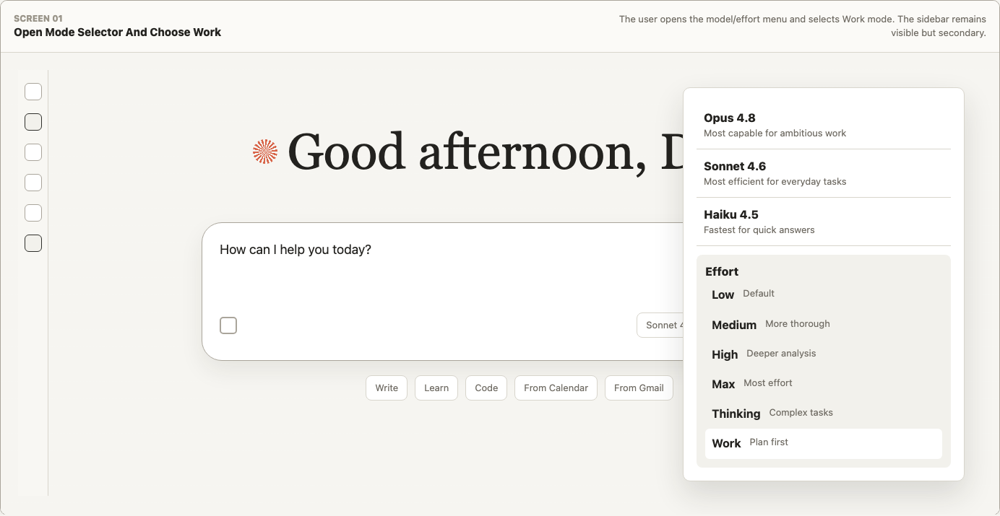
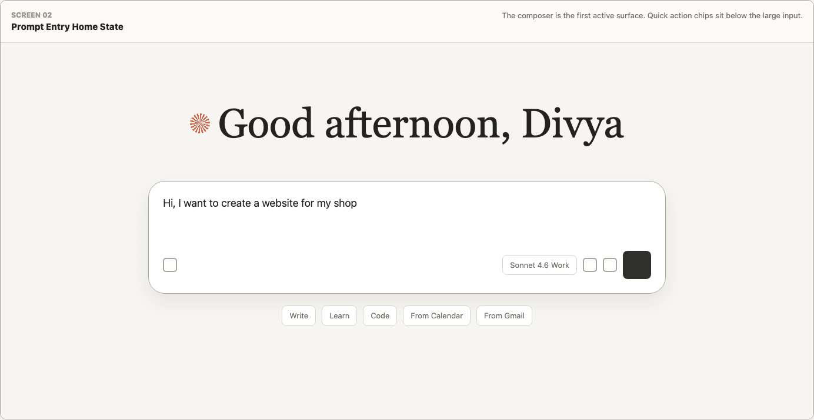
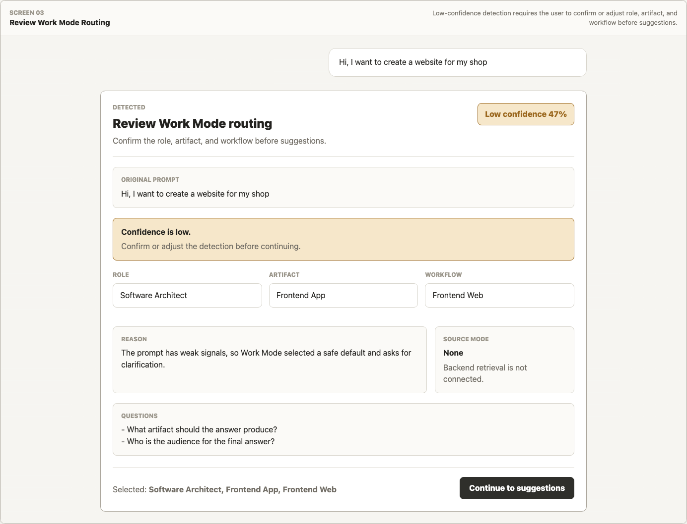
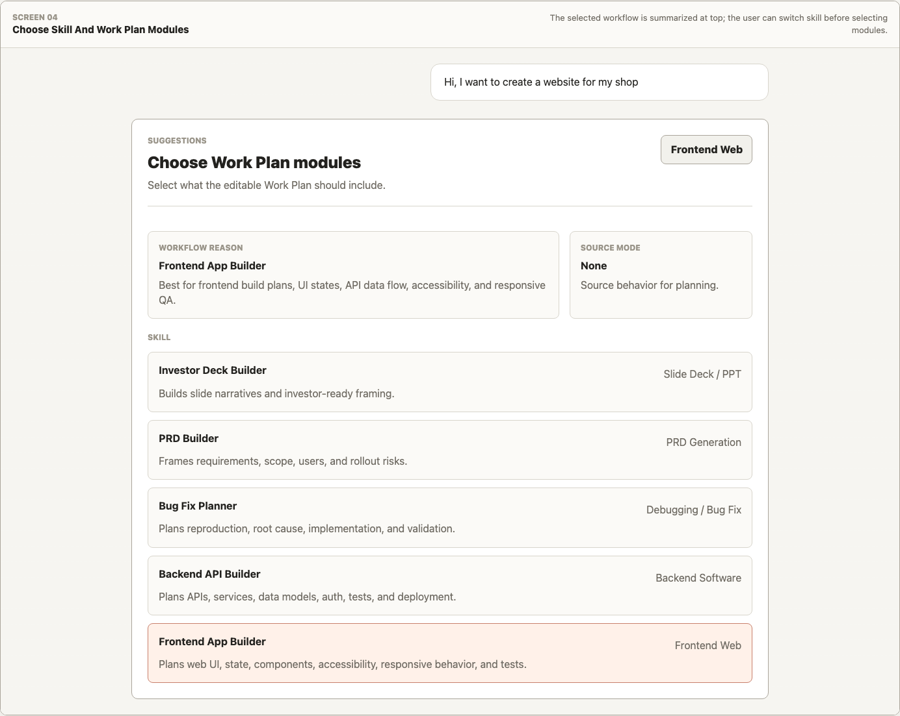
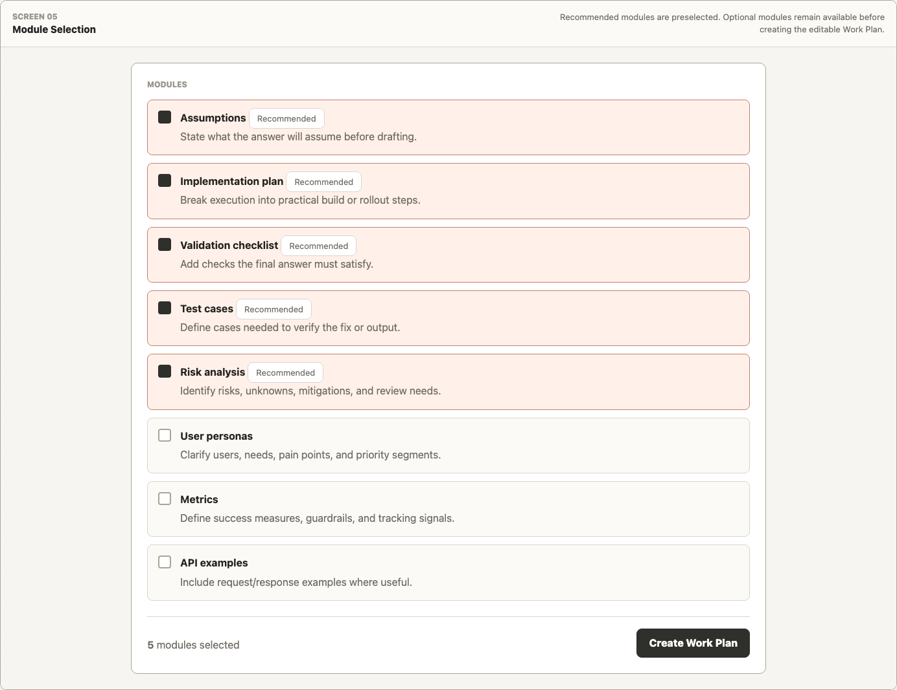
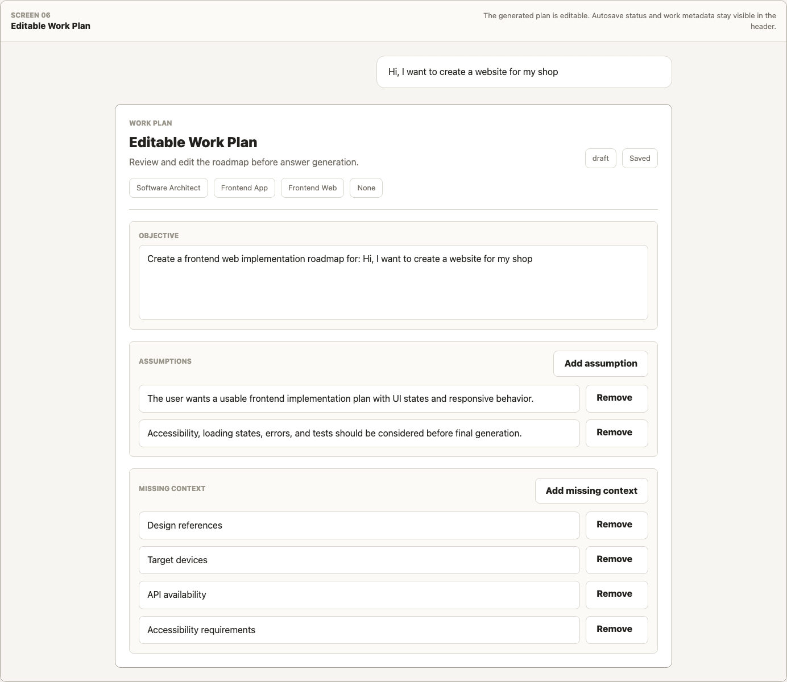
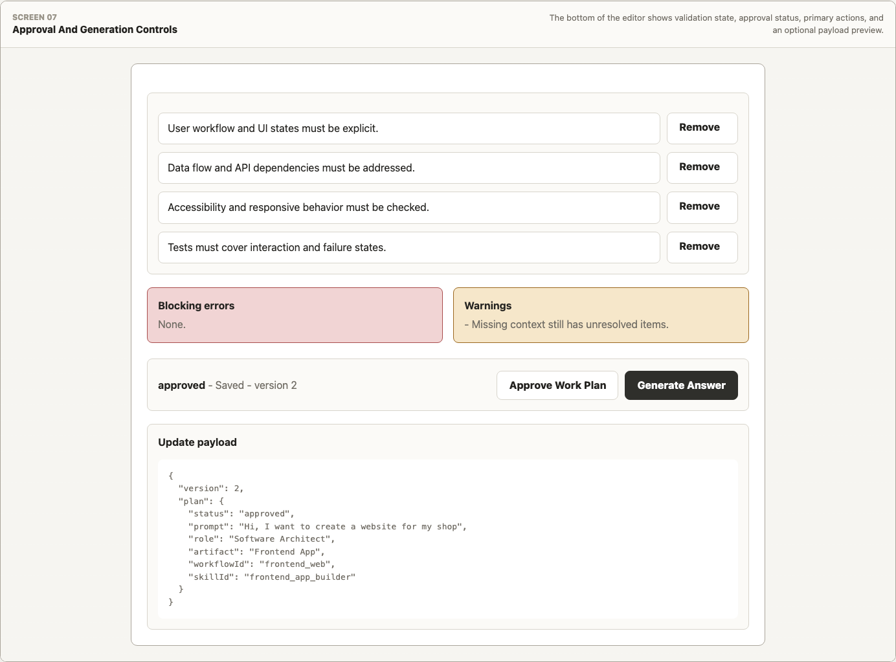

1
Select Work Mode
User opens the model menu and chooses Work.
PrototypeReadme.md

User opens the model menu and chooses Work.

User submits the task from the Claude-style composer.

System shows role, artifact, workflow, and confidence.

User confirms skill and workflow recommendations.

Recommended modules are preselected and editable.

User adjusts objective, context, assumptions, and sections.

Answer generation follows the approved Work Plan.